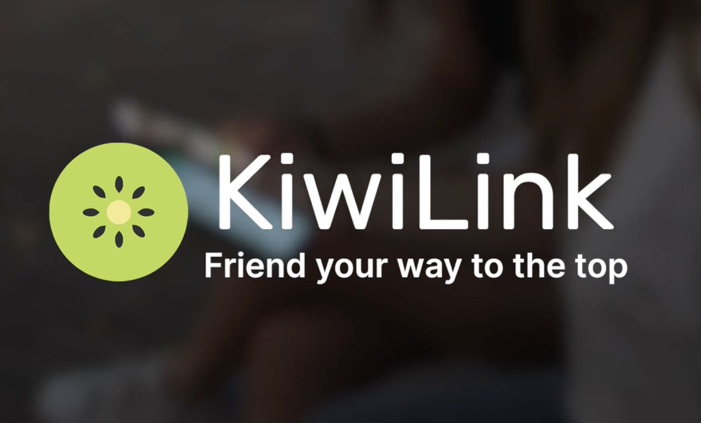

As a freshman undergrad CS student (circa fall 2018), I walk into my first CS lecture and see like 1200 other students surrounding me in the room.

Everybody seems to be minding their own business, focused on themselves.
I think, “How am I supposed to find a relevant and optimal study buddy given that there is an overwhelming number of shy strangers around me?"
As the COVID pandemic rolled around the following year, I wanted to better understand the problem of anti-social academia at UW.
I paired up with a friend. Along with my friend (Jun Song), I interviewed 50+ University of Washington students about their academic/social lives and tried to learn about their pain points.
Ultimately, we found that roughly 68% of UW students wanted to find some relevant academic friends or study buddies, but found it difficult to do so (thanks to all sorts of factors).

And so I embark on an adventure to combat anti-social academia.
I recruit some talented, quirky, awesome Software Devs and UX Designers and we get to work building KiwiLink.

